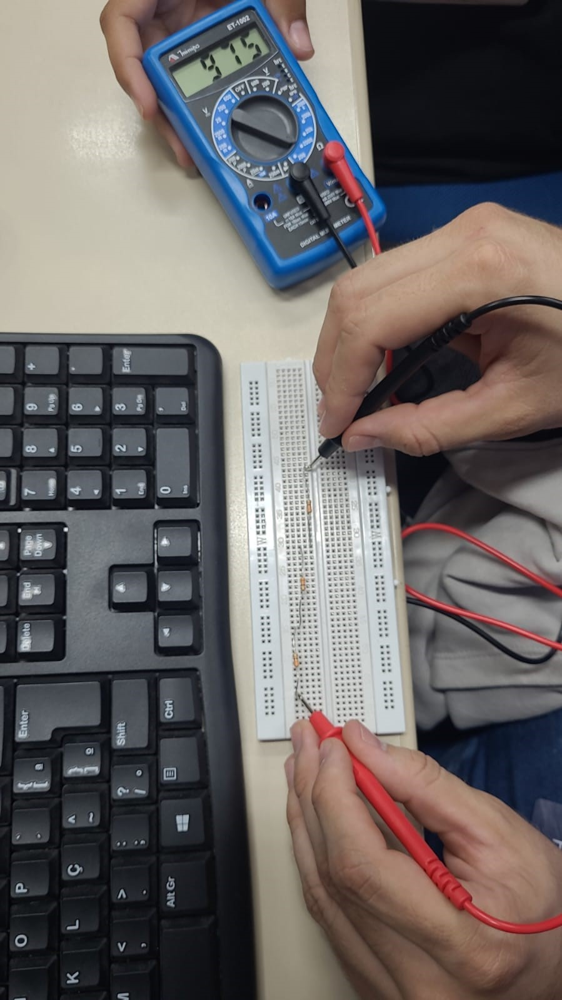
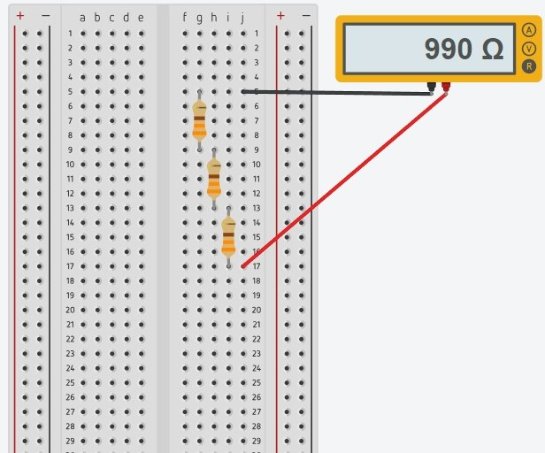
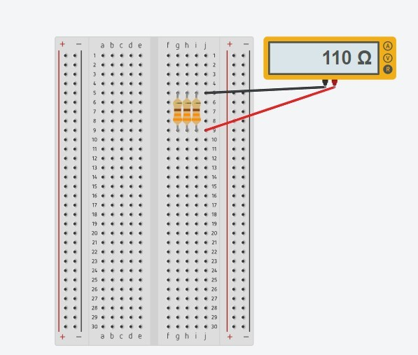
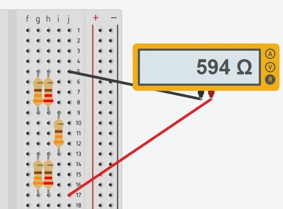

Uma aula de resistores e multímetros que veio a envolver a montagem com circuitos com resistores e medir a resistencia usando o multímetro.
O primeiro experimento que a gente veio a fazer, foi testar os pequenos resistores de 220 ons com o multímetro em paralélo.
 tinkerCAdFoi testar os pequenos resitores em formados paralélo que testamos com o multímetro.
 tinkerCaDO Terceiro experimento a gente fez, foi testar os pequenos resistores de 220 e 330 ons com o multímetro em formato de mista .
 tinkerCAD